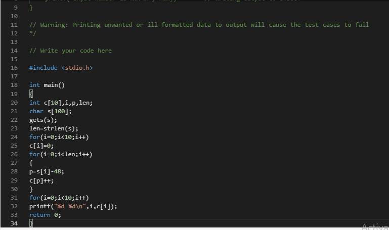
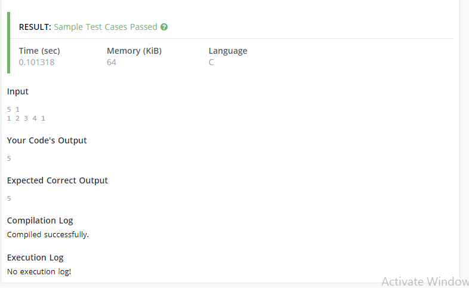

Mandatory Addiional Requirement (MAR)
Code using C programming
QUESTION 1 :
You are given a string S. Count the number of occurrences of all the digits in the string S.
Input:
First line contains string S.
Output:
For each digit starting from 0 to 9, print the count of their occurrences in the string S.
So, print 10 lines, each line containing 2 spaces separated integers.
First integer i and second integer count of occurrence of i. See sample output for clarification.
So, print 10 lines, each line containing 2 spaces separated integers.
First integer i and second integer count of occurrence of i. See sample output for clarification.
Answer:
#include
int main() {
int c[10], i, p, len;
char s[100];
gets(s);
len = strlen(s);
for(i=0; i<10; i++) {
c[i] = 0;
for(i=0; i
c[p]++;
}
}
for(i=0;i<10;i++) {
printf("%d %d\n", i, c[i]);
return 0;
}
}

RESULTS:

QUESTION 2 :
You have been given an array of size N consisting of integers.
In addition you have been given an element M you need to find and print the index of the last occurrence of this element M in the array if it exists in it,
otherwise print -1. Consider this array to be 1 indexed.
In addition you have been given an element M you need to find and print the index of the last occurrence of this element M in the array if it exists in it,
otherwise print -1. Consider this array to be 1 indexed.
Input:
The first line consists of 2 integers N and M denoting the size of the array and the element to be searched for in the array respectively.
The next line contains N space separated integers denoting the elements of the array.
The next line contains N space separated integers denoting the elements of the array.
Output:
Print a single integer denoting the index of the last occurrence of integer M in the array if it exists, otherwise print -1.
Answer:

RESULTS:
